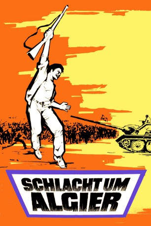

#5649 Schlacht um Algier
Alternativ: The Battle of Algiers (Englischer Titel)
Auszeichnungen: für 2 Oscars nominiert 5 BAFTA-Awards gewonnen
 
 IMDB-Wertung: 8.1 / 10
IMDB-Wertung: 8.1 / 10  Metascore: 0
Metascore: 0 
Mit beeindruckender Glaubwürdigkeit vergegenwärtigt der Film die Schlüsselmomente des algerischen Kampfes um Unabhängigkeit von der französischen Besatzung in den 1950er Jahren. Als die Gewalt auf beiden Seiten eskaliert, werden Soldaten von Kindern erschossen, zünden Frauen Bomben in Cafés, und französische Soldaten bedienen sich der Folter, um den Willen der Aufständischen zu brechen. Im dokumentarischen Stil in den Straßen von Algier gedreht, ist der Film eine Studie moderner Kriegsführung - mit terroristischen Attacken und den brutalen Techniken ihrer Bekämpfung.
Jahr: 1966
Dauer: 121 Minuten
FSK: 16
Land: Italien Studio: CICTonspuren: DD2.0 - ,
Untertitel: Deutsch, Englisch,
Auflösung: 1080p (1920x1024) Größe: 7997 MB
Genre: Drama, Krieg
Regisseur: Gillo Pontecorvo
Drehbuch: Patrick Melton
Soundtrack:
Darsteller:
- Jean Martin als Col. Mathieu
- Brahim Hadjadj als Ali La Pointe
- Yacef Saadi als Djafar
- Samia Kerbash als One of the girls
- Tommaso Neri als Captain
- Ugo Paletti als Captain
- Fusia El Kader als Halima
- Franco Moruzzi als
- Mohamed Ben Kassen als Petit Omar
- Michele Kerbash als Fathia , uncredited
Datei: X:\1966\Schlacht um Algier (1966, FSK16, 1920x1024).mkv seit 02.03.2017
Festplatte: HD 1900-1970
 Es gibt insgesamt 27 Filme in der Gruppe '1966'
Es gibt insgesamt 27 Filme in der Gruppe '1966'